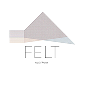
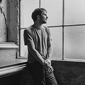

GNSDK WebApp
-

cover art
-

artist image
-
genre image
Artist Biography
Nils Frahm (born 20 September 1982) is a German musician, composer and producer based in Berlin. He is known for combining classical and electronic music, and for an unconventional approach to the piano, in which he mixes a grand piano, upright piano, Juno 60, Rhodes and a drum machine and Moog Taurus without using any loops or playbacks. As well as his solo work, Frahm has released collaborations with notable performers such as Anne Müller, Ólafur Arnalds and F.S. Blumm.
Album Review
Felt is a body of music so intimate and hushed you can practically hear the microphones breathing. Put together in late night sessions at his home studio, this third release from German modern classical impresario Nils Frahm has floor boards creaking and errant noises rustling in the gaps between his delicately poised chords, Frahm’s breathing faintly audible as his ghostly piano tinkering plays out. If autumn has so far been generous to neo-classical junkies with albums from the likes of droned string symphony experimenters A Winged Victory For The Sullen, then Felt is perhaps the season’s most enticing gift yet: a cryptic weave of indelible sounds and silences; an emotional juggernaut.
External Data
Artist: Nils Frahm |
Album: Felt |
Album ID: 29516748 |
Text Match Score: 100 |
Year: 2011 |
Lang: eng |
TUI ID:TUI tag 247594715:B79C63D6A5E5979482B0CC64E562630C